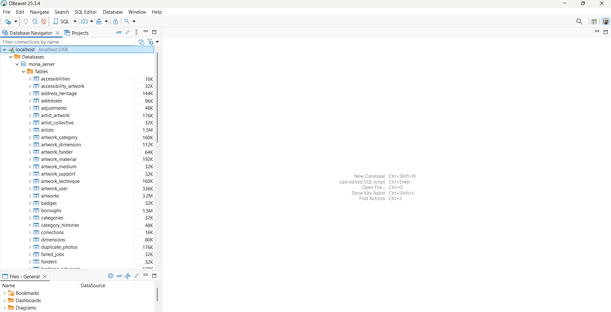
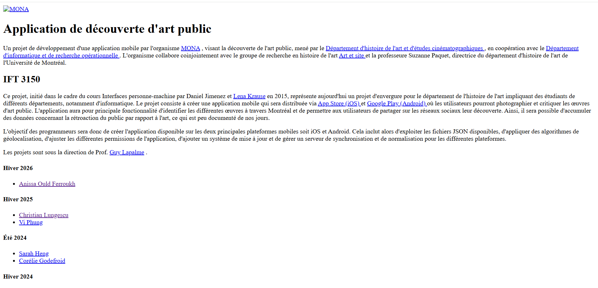

Suivi de projet¶
Semaine 1 (12–18 janvier)¶
Objectifs de la période¶
- Prendre connaissance du projet MONA et de son contexte
- Comprendre l’organisation de l’équipe et les outils utilisés
- S’approprier l’application et les ressources existantes
Travail réalisé¶
- Création de la page de suivi afin de consigner les rapports hebdomadaires
- Prise de connaissance de l’historique et de la mission de MONA (lecture du blogue et des rapports existants)
- Découverte et test de l’application MONA en conditions réelles (utilisation sur le terrain)
- Intégration aux outils de communication et de collaboration du projet (Groupe Element, pCloud, Dépôt Git, Figma, MarkDown, TestFlight)
- Rencontre avec Lena pour comprendre le fonctionnement général du projet et de l’équipe
- Rencontre avec Simon pour une présentation du fonctionnement du serveur
- Participation à une réunion avec l’équipe de design et découverte de nouvelles propositions de design
Semaine 2 (19–25 janvier)¶
Objectifs de la période¶
- Effectuer l'installation des outils et logiciels nécessaires
- Comprendre l’organisation de l’équipe et les outils utilisés
- Explorer le processus ETL en quoi il pourrait nous servir au sein du projet
Travail réalisé¶
- Compléter la page de suivi pour cette semaine concernant les rapports hebdomadaires
- Participation à une réunion avec l’équipe (Weekly Meeting)
- Lecture de la documentation concernant l'architecture du projet sur le Wiki.
- Effectuer l'installation ainsi que la configuration de l'environnement de développement
- Familiarisation avec la librérie Laravel
- Participation à une réunion avec Corélie pour qu'elle puisse m'expliquer l'API v3 (version la plus récente)
- Recherche sur le modèle ETL et comment les outils OpenRefine ainsi que Apache Airflow peuvent opérer au niveau du processus
Après avoir effectuer ma rechecher j'ai pu organiser mes idées comme suit :
Cliquer ici pour ouvrir en plein écran
Semaine 3 (26 janvier - 1er février)¶
Objectifs de la période¶
- Continuer la recherche sur le processus ETL et son intégration avec le projet MONA
- Trouver des avis sur les deux outils Apache Airflow ainsi que OpenRefine
- Planifier une rencontre avec Simon pour apprendre comment effectuer un déploiement
- Générer la clé ssh publique et la transmettre à Lena pour avoir accès au serveur
Travail réalisé¶
-
Participation à une réunion avec l’équipe (Weekly Meeting)
-
Génération de la clé publique SSH afin d'avoir accès au serveur :
- Il faut d'abord s'assurer que OpenSSH soit installé (Windows 11) :
ssh -v - Pour générer sa clé publique il faut taper :
ssh-keygen -t ed25519 -C "ton_email@example.com" - Appuyer sur Entrée pour accepter l'emplacement par défaut
- Choisir une passphrase (optionnel)
- Pour récupérer la clé publique :
cat ~/.ssh/id_ed25519.pub
- Il faut d'abord s'assurer que OpenSSH soit installé (Windows 11) :
-
Participation à une réunion avec Simon pour me montrer comment effectuer un déploiement au niveau de l'environnement de staging (dev) :
- *Bonne pratique* : créer une branche sur GitHub pour chaque tâche
-
Étapes du déploiement :
- Dans le terminal taper :
ssh picasso - Introduire le mot de passe de la configuration
-
Accéder au bon repo — pour l’environnement de staging :
ls docker/dev/mona-server/ - Effectuer un
git pull
- Dans le terminal taper :
-
J'ai exploré cette semaine quels étaient les avantages et inconvénients de l'utilisation du processus ETL au sein du projet MONA :
Cliquer ici pour ouvrir en plein écran
- Feedback lors de la réunion hebdomadaire : le schéma n’explique pas clairement de quelle façon les deux outils seront utilisés dans le backend pour la migration des données. Je dois donc me familiariser davantage avec le code existant et déterminer comment et où intégrer les packages du processus ETL déjà présent dans Laravel notamment ceux mentionnés dans le premier schéma, puisque l’idée d’utiliser Airflow a été écartée en raison de sa complexité
Semaine 4 (02–08 février)¶
Objectifs de la période¶
- IMPORTANT : Comprendre et se familiariser avec le code côté serveur
- Répondre aux questions suivantes :
- Comment intégrer OpenRefine dans le workfow actuel ?
- Est-ce que le format exporté de OpenRefine correspond à nos besoins?
Travail réalisé¶
- Participation à une réunion avec l’équipe (Weekly Meeting)
- Participation à une réunion avec Christian, durant laquelle il m’a présenté une vue d’ensemble du développement mobile, la librairie utilisée (Vue.js) et le processus de release, qui était le sujet principal de notre rencontre. En résumé, une fois la release destinée aux tests effectuée, la mise en production se fait facilement, que ce soit sur l’Apple App Store (iOS) ou sur le Google Play Store (Android).
- Familiarisation et compréhension de mona-server :
Architecture du projet
- app/ : Contient la logique métier de l'application (Modèles, Controllers, Services)
- routes/ : Définit les routes API et web
- database/ : Migrations de la base de données
- resources/ : Vues (Blade, Vue.js) et assets (CSS, JS)
- public/ : Point d'entrée web de l'application (fichiers publics)
- config/ : Fichiers de configuration Laravel
- storage/ : Fichiers générés : logs, cache, uploads
- tests/ : Tests unitaires et fonctionnels
- documentation/ : Documentation du projet
- Vue d'ensemble du dossier app/
| Dossier | Rôle principal |
|---|---|
Console/ |
Commandes Artisan et planification (schedule) |
Exceptions/ |
Gestion centralisée des exceptions HTTP |
Helpers/ |
Fonctions utilitaires (fichiers, photos) |
Http/ |
Contrôleurs, middleware, validation, ressources API |
Jobs/ |
Tâches asynchrones (imports, nettoyage, mise à jour JSON) |
Mail/ |
Classes d'envoi d'e-mails (réinitialisation mot de passe) |
Models/ |
Modèles Eloquent et logique métier des entités |
Providers/ |
Enregistrement des services et configuration des routes/vues |
NOTE : Plus de détails concernant les sous dossiers de app/ sont disponibles ici Détails
Architecture à plusieurs niveaux Le projet suit une architecture multi-niveaux :
- Couche de présentation : Interface web (Vue.js + Blade)
- Couche de service : API REST (Laravel) — version actuelle : v3 (Hiver 2026)
- Couche de données : Base de données MySQL
Fichiers importants
- composer.json : Dépendances PHP
- package.json : Dépendances JavaScript
- docker-compose.yml : Configuration Docker
- .env : Variables d'environnement
- artisan : CLI Laravel pour les commandes de développement
- Packages ETL et import de données pour Laravel
1. Packages ETL (Extract – Transform – Load)
marquine/php-etl
- Packagist :
marquine/php-etl - Très utilisé (132k+ installs). API fluide pour enchaîner extract → transform → load.
- Intégration Laravel (ServiceProvider), support SQLite, MySQL, PostgreSQL.
- Exemple :
Job::start()->extract('csv', 'file.csv')->transform('trim', ['columns' => ['name']])->load('table', 'users').
LaravelPlus/etl-manifesto
- GitHub : LaravelPlus/etl-manifesto
- ETL « Laravel-native » déclaratif : tout se définit en YAML (sources, transformations, destinations).
- Pas besoin d’écrire de requêtes ou de scripts d’export ; adapté si tu veux des pipelines déclaratifs.
2. Packages d’import (proches ETL / flux de données)
spatie/simple-excel
- Packagist :
spatie/simple-excel - Très répandu (millions d’installs). Lecture/écriture Excel et CSV, API simple.
- Utile pour l’« extract » et un peu de « transform » avant d’alimenter ta base (load fait à la main avec Eloquent/DB).
- Compatible Laravel 9–12, PHP 8.3+ sur les versions récentes.
laravel-enso/data-import
- GitHub : laravel-enso/data-import
- Import XLSX (box/spout) avec templates, validation, notifications.
- Plutôt « import structuré » que ETL complet, mais couvre bien extract + transform + validation.
giftonian/massive-csv-import
- Import CSV avec beaucoup de lignes, basé sur les Laravel Queues.
- Adapté aux gros fichiers (millions de lignes), moins « ETL générique » qu’un vrai moteur ETL.
3. Synthèse
| Besoin | Package à regarder |
|---|---|
| ETL complet (extract + transform + load) avec API PHP | marquine/php-etl |
| ETL déclaratif en YAML, intégré Laravel | LaravelPlus/etl-manifesto |
| Lire/écrire Excel/CSV simplement | spatie/simple-excel |
| Import XLSX avec validation et templates | laravel-enso/data-import |
| Gros CSV en file d’attente | massive-csv-import (ou jobs custom comme dans mona-server) |
Dans mona-server, les imports sont faits avec des Jobs Laravel personnalisés (sans package ETL). Si on veut introduire un ETL (sources multiples, transformations réutilisables, config déclarative), php-etl ou etl-manifesto sont les plus proches ; pour seulement lire des CSV/Excel avant de les insérer en base, spatie/simple-excel suffit souvent.
Semaine 5 (09–15 février)¶
Objectifs de la période¶
- Continuer les tâches de la semaine précédante.
Travail réalisé¶
-
J'ai eu une réunion avec Simon durant laquelle il m'a expliqué comment les migrations fonctionnaient et comment notre base de données est peuplée. En explorant les dossiers du mona-server je ne comprenais pas trop pourquoi dans le dossier database on avait seulement 3 fichiers de migrations et surtout comment nos données sont importer dans notre base de données. Simon m'a expliqué qu'il devrait y avoir un dossier migrations sur Github non disponible pour l'instant (qu'il va le push bientôt) et qui donc contient tout les fichiers nécessaires pour la création/modification de nos tables. Pour ce qui est de l'importation des données, pour remplir nos tables pour la 1ère fois après que le serveur soit actif en local :
- on lance le serveur dans le fond :
./vendor/laravel/sail/bin/sail up -d - on utilise ces commandes :
./vendor/laravel/sail/bin/sail artisan migrateensuite./vendor/laravel/sail/bin/sail mysql < 01-07-2024.sql
- on lance le serveur dans le fond :
-
J'ai également installé dbeaver (n'importe quel autre logiciel fera l'affaire) pour mieux visualiser nos données car je trouvais que c'était un peu compliqué depuis le terminal. Les identifiants pour se connecter à la base de données se trouvent dans le fichier .env . Une fois ceci est fait on devrait voir ceci :

- Une des questions posée à Simon était pourquoi ma page une fois que je lance le serveur ne charge pas le styling, et on s'est donc rendu compte que y'avait un bug quelque part.

Simon m'a alors fait part de ces deux fichiers : .env et docker-compose.yml En comparant mes fichiers et les siens, il n'y avait pas de différences. J'ai donc fait mes recherches et j'ai trouvé que le problème était bel et bien dans le fichier des variables d'environements .env :
Changer le APP_URL de : APP_URL=http://localhost à APP_URL=http://localhost:8080
Concernant le logo, j'ai trouvé que dans le code le nom de l'image utilisé est Mona-Logo.svg alors que dans le projet c'est logo.svg. J’ai donc simplement changé le nom de l’image au lieu de le modifier partout dans le code.
- J'ai lu le mémoire de Simon, et voici ce que je retiens :
- Retour sur les deux questions :
- Comment intégrer OpenRefine dans le workfow actuel ?
- Est-ce que le format exporté de OpenRefine correspond à nos besoins?